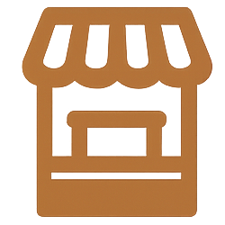

Filter by Type :
Antiquaire
Bouquiniste
Foire d’art
Galerie d’art
Grande distribution
Librairie
Marché aux puces

Salle de vente
Select Arrondissement:
All
1 - Louvre
2 - Bourse
3 - Temple
4 - Hôtel-de-Ville
5 - Panthéon
6 - Luxembourg
7 - Palais-Bourbon
8 - Élysée
9 - Opéra
10 - Entrepôt
11 - Popincourt
12 - Reuilly
13 - Gobelins
14 - Observatoire
15 - Vaugirard
16 - Passy
17 - Batignolles-Monceau
18 - Butte-Montmartre
19 - Buttes-Chaumont
20 - Ménilmontant
Reset Filters
Paris-wide Commerce Distribution
Selected Arrondissement Distribution
Findings
The commercial density peaks along major metro and bus corridors, indicating that transit networks guide the formation of shopping districts.
Districts around highly accessible stations exhibit stronger interconnectivity, forming a “hub-and-spoke” spatial pattern.
Optimizing transit stops can promote commercial dispersion, boosting tourist footfall and local economic vibrancy.
▶